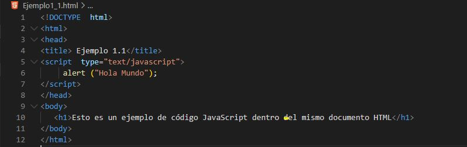
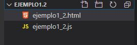
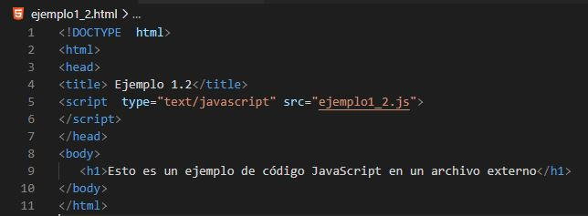
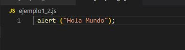
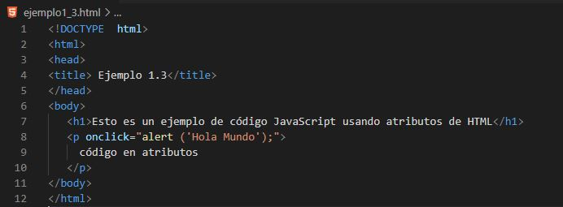

Como ya hemos hablado, JavaScript complementa al HTML y tenemos tres formas de integrarlo:
1. JavaScript en el mismo documento HTML

En el ejemplo vemos como en código JavaScript va entre las etiquetas <script>. Normalmente irían en la sección <head> pero también podrían ir en el <body>.
Esta técnica suele usarse cuando se hace referencia desde cualquier parte del documento a funciones con fragmentos de códigos genéricos. La mayor desventaja es que si ese fragmento de código lo queremos utilizar en otras páginas , debemos incluirlo en cada una de ellas, lo cual es un inconveniente cuando queramos realizar modificaciones de dicho código.
2. JavaScript en un archivo externo
Nos creamos una carpeta que va a contener el archivo HTML y el archivo js.

El contenido del archivo HTML quedaría así:

En el ejemplo anterior, se usa la etiqueta <script> para que mediante su atributo src se indique el archivo en el que va el códdigo JavaScript (en este caso está en la misma carpeta que el archivo HTML). Si por ejemplo el archivo estuviera en una carpeta llamada "practica", el atributo src tendría el valor "/practica/ejemplo1_2.js".
Por cada archivo de JavaScript que hagamos referencia tendremos que tener una etiqueta <script> con su atributo src indicando la ubicación del archivo js.
Entre las ventajas de este método está que la vinculación de un mismo fichero externo puede hacerse desde varios documentos HTML distintos. De esta forma, en caso que haya que modificar algo , solo hay que hacerlo en un único fichero.
El contenido del archivo js quedaría así:

3. JavaScript en elementos HTML
Se utiliza como forma de controlar los eventos que suceden asociados a un elemento HTML concreto. Consiste en insertar fragmentos de JavaScript dentro de atributos de etiquetas HTML de la página.

La principal desventaja es que el código JavaScript se intercala con el HTML y dependiendo de la complejidad y longitud de éste, el mantenimiento y codificación del código puede resultar más complicado.